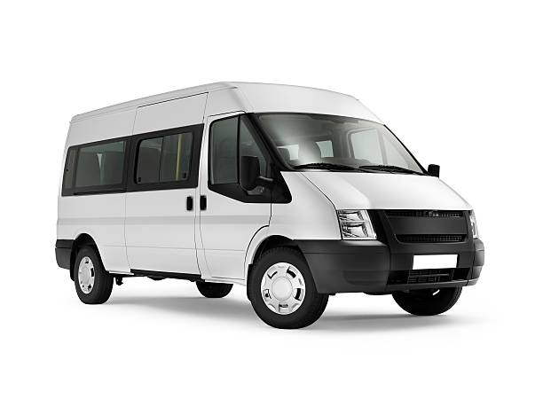

CARZNOT
Helping Dealers Help Each Other!

FREE SEARCH SERVICE. Allows for authorized automotive dealers to list a vehicle they need, or to quickly find a vehicle they have a customer for.

ALLOWS DEALERS TO LIST VEHICLES for trade or wholesale. Such vehicles might include off-make trade-ins, or vehicles on their lot that are over-age or trade-ins they do not want prior to sending it to an auction.

VALUATIONS Allows for dealers to accurately evaluate the value of an off-make trade or a vehicle they are not familiar with, by posting it on the site for other dealers who might be interested in buying it.
RENTAL AND LEASE RETURNS Provides dealers with quick access to vehicles being sold by various rental agencies and lease companies that a dealer might not be familiar with.

I started in the automotive business selling new and used vehicles in Calgary, Alberta in
1975. This was after having completed a year of university I needed to find a job to go back to school and
finish my degree, but being married with a family it quickly became more of a
dream than a reality. 47 years later, after having had a successful career selling cars and light
trucks and with a clientele that came back to me year after year to purchase vehicles I retired – then I
came back to school to finish my degree. Back in 1973 I studied accounting, but now that I am back I am
studying
Website Design and Data Management, and with the encouragement of some great individuals I was able to design
this
website for the use of dealers as a part of my final project.
During those 47 years that I sold new
vehicles,
I also sold almost every other make there was, because those were what my customers, who came to see me year
after year,
wanted. So when customers or prospects would phone, instead of telling them I had nothing like that on the lot
I would
say that I would check and call them back tomorrow – and then immediately I would email other dealers to find
out if
they could help and most often another dealer had almost exactly what I needed. Then we would figure out a
price
and I would phone my customer and tell them what I had, and what they would have to pay for it and usually I
made the
deal.
Such can be verified by the dealership I used to work for, but in one year (2016), as a New Vehicle
Salesperson
I sold 92 used vehicles, 70 of which I purchased from other dealers. I made a lot of money doing that and the
dealership
I worked for did as well.
I am now retired, but right now this website is what I am about. I want to fill
a gap
that exists in our industry where automotive dealers might more effectively work with one another (instead of
always
going through the auction) to find vehicles they want, and especially to find a vehicle that they need right
now.